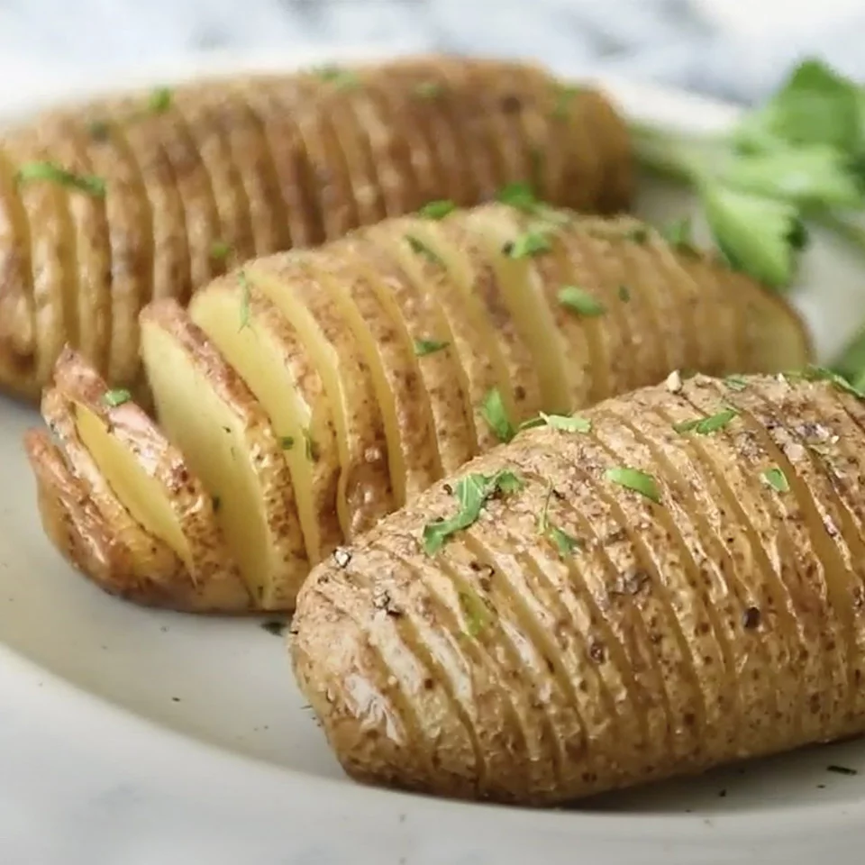

Basic Hasselback Idaho® Potatoes
Image

Description
For just a little more effort than a plain baked potato, you can make these showy Hasselback potatoes. They are easy to make and encompass two favorite potato textures – edges that are crispy like your favorite French fries with a creamy center reminiscent of mashed. These basic Hasselback potatoes will make you look like a cooking whiz and using Idaho® Potatoes will prove that you clearly have discerning taste!
Ingredients
- 4 large Idaho® Russet Potatoes
- lemon juice
- 4 tablespoons butter or oil
- fresh rosemary
- 1 large clove garlic, sliced
- salt
- pepper
- fresh parsley, chopped, for garnish
Steps
- Preheat oven to 400 degrees F.
- Prepare a bowl of cold water with a squeeze of lemon juice in it. Slice off the bottom of each Idaho® Russet Potato lengthwise to make them steadier for cutting. Place potato between two chopsticks. Cut slits 1/4 apart using the chopsticks as a guide to keep from cutting all the way through. The slices should stay connected at the bottom. Carefully fan out the sliced pieces without breaking them apart. Place the cut potato in the prepared bowl of water while you cut the remaining potatoes.
- Melt butter in a saucepan over medium heat. Add a couple of sprigs of rosemary, the sliced garlic, and a sprinkle of salt and pepper. Let sit a few minutes to season the butter.
- Remove potatoes from water and dry thoroughly. Place on a baking sheet. Brush potatoes with some of the melted butter and bake for 1 hour. Halfway through cooking, the potatoes will start to fan out. When this happens, brush with some more of the melted butter.
- Remove from the oven. Brush with remaining butter, sprinkle with salt, and garnish with chopped parsley. Serve right away.